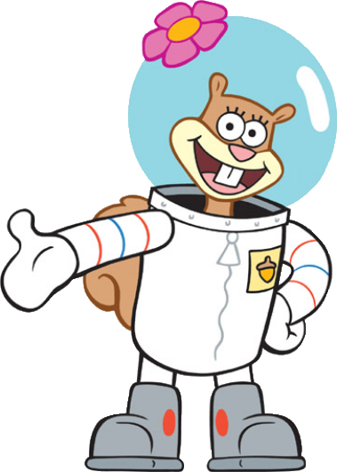
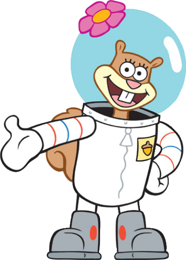

SpongeBob


 

SpongeBob SquarePants adalah sebuah serial animasi yang paling terpopuler di Nickelodeon. Pada awalnya serial kartun animasi ini ditayangkan pada tahun 1999 di Amerika Serikat dan dicipta oleh Stephen Hillenburg, seorang animator dan ahli biologi laut, dan diterbitkan oleh perusahaannya, United Plankton Pictures Inc.
Serial kartun animasi ini ditayangkan di Malaysia menerusi saluran Nickelodeon dan TV3, dan juga melalui saluran TV9 yang telah diterjemahkan ke dalam bahasa Melayu.
Di Indonesia serial kartun animasi ini dipopulerkan oleh Lativi (sekarang tvOne), kemudian hak tayang acara-acara yang diproduksi oleh Nickelodeon dibeli oleh Global TV (sekarang GTV). Kartun ini diciptakan oleh seorang ahli biologi laut dan animator Stephen Hillenburg dan lalu dirilis melalui perusahaannya United Plankton Pictures Inc. Serial kartun animasi ini settingnya berada di Samudra Pasifik di kota Bikini Bottom.